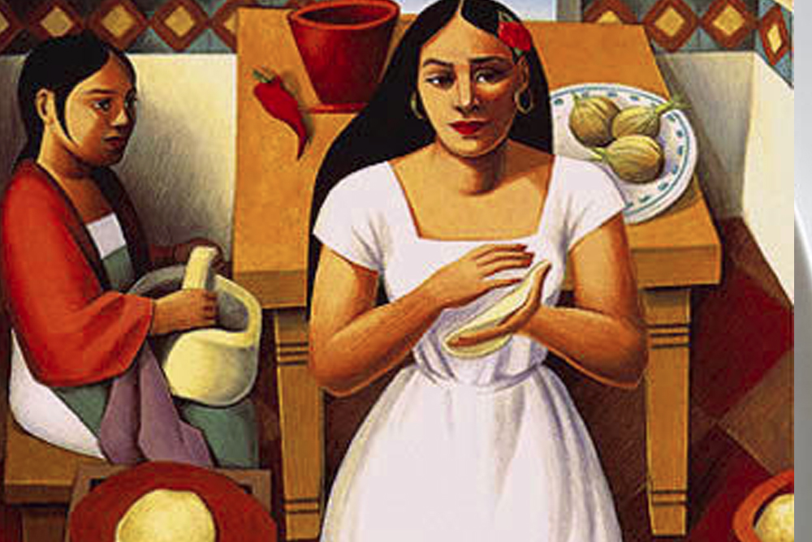
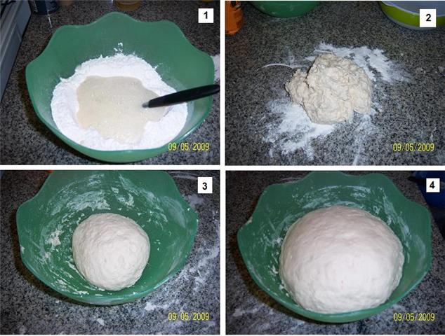
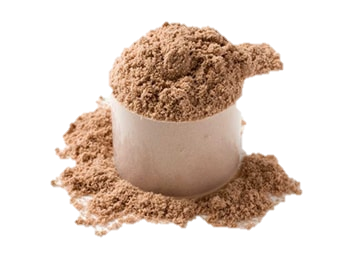
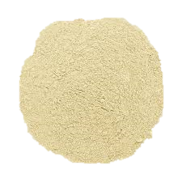
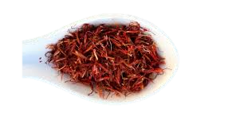
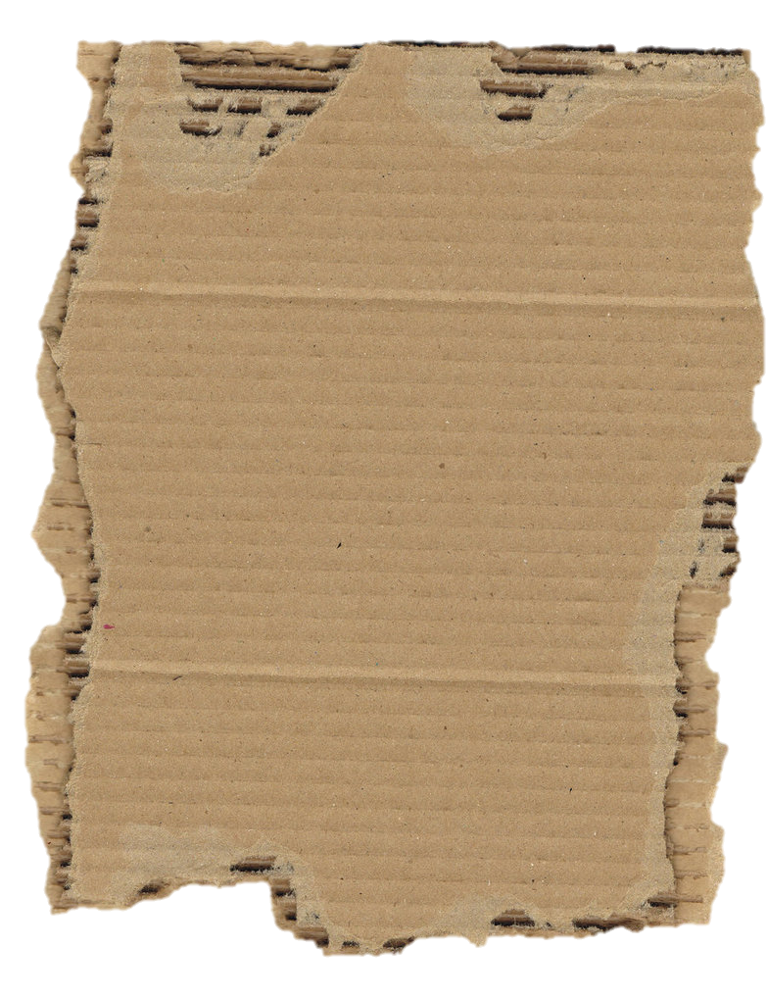

|  Para más información sobre la obra "Como Agua Para Chocolate" clicAquí |
Actualmente Tita vive en la casa de John, el laboratorio es el lugar preferido de ambos. Cuando John trabaja en el laboratorio a Tita le gusta mirarlo porque siempre aprende y descubre nuevas cosas. Como John la ha salvado de su madre que quería “depostitarla” en un manicomio Tita le está muy agradecida a John. John le ha trído a su casa, le ha compuesto su nariz y la ha limpiado de la suciedad de las palomas.
Cada día se siente mejor gracias a las palabras y la actitud comprensiva de John. Para Tita John es su libertador del horror. Pero no dice nada a John porque prefiere el silencio y no habla en general. Tiene que ordenar su mente. Entretanto Caty una señora norteamericana de 70 años la alimenta y también se ocupa de Alex, el pequeño hijo del doctor. La madre de esté se murió cuando el nació. Tita escucha a Alex y le observa pero no quiere conocerlo.
A veces Tita ni siquiera come, prefiere mirar sus manos y analizarlas. No sabe que hacer con su tiempo libre porque al lado de su madre tenía que llevar la casa y ocuparse de su madre.
Nunca decidía por sí misma. Le gusta estar lejo de todo eso, no pensar ni hablar. En estos días Tita encuentra a una mujer de 80 años que es muy parecida a Nacha. Su cara es la de una indígena.
Sonríe amamblemente y la invita a sentarse junta a ella para beber el té que ha preparado. Entre las dos se desarolla más que una comunicación. Tita la visita diariamente. Es la abuela de John que es del tribu kikapú.
Su apodo es “luz del amanecer”. Un día John quiere mostrar a Tita la teoría de su abuela, es decir que hombres son parecidos a fósforos. Los fósforos tienen que ser alumbrados por algo para que quemen. Los hombres también necesitan una persona particular que alimenta su alma. Tita conoce a su alimento pero por desgracia no puede volver a encenderlo. En la noche siguiente Tita escribe en una pared por qué no habla. Cuando al día siguiente John entra al
laboratorio ve en la pared las letras escritas: Porque no quiero. Estas tres palabras de Tita son el primer paso hacia su liberación. Mientras tanto Tita piensa en las palabras de John y se pregunta si John logrará encender su alma de nuevo.
Pero no lo sabe, solo está convencida de que no quiere vivir cerca de Mamá Elena nunca más.
Problemáticas:
Tita queda traumada y el doctor Brown le ayuda:Tita lo había descubierto a la semana de haber llegado a la casa del doctor John Brown.
Pues John, en contra de lo que Mamá Elena le había pedido, en lugar de depositarla en un manicomio la llevó a vivir con él.
La familia del doctor Brown tiene diferencia con su abuela: el cuarto le servía de refugio en contra de las agresiones de su familia.
Una de las primeras que recibió fue que le pusieran el mote de "la kikapú", en lugar de llamarla por su verdadero nombre,
Éste era sólo un pequeño ejemplo de la gran diferencia de opiniones y conceptos que existían entre estos representantes de dos culturas tan diferentes,
y que hacía imposible que entre los Brown surgiera el deseo de un acercamiento a las costumbres y tradiciones de «Luz del amanecer».
Tuvieron que pasar años antes de que se adentrara un poco en la cultura de la kikapú
El doctor le muestra el experimento del fosforo a tita:Tita gozaba enormemente el verlo trabajar. Con él siempre había cosas que aprender y descubrir, como ahora,
que mientras preparaba los cerillos le estaba dando toda una cátedra sobre el fósforo y sus propiedades. El doctor le mostró un experimento a Tita.
Aunque el fósforo no hace combustión en el oxígeno a la temperatura ordinaria, es susceptible de arder con gran rapidez a una temperatura elevada, mire...
Tita nunca dejaría de agradecérselo. Tal vez en un manicomio hubiera terminado realmente loca.
El Rancho de Mamá Elena:
La cocina. En la cocina que es donde pasa Tita mayor tiempo, se sabe que hay una mesa y que hay dos puertas, una de ellas lleva hacia el patio trasero donde se encuentra un huerto, y la otra que lleva hacia un pasillo. Esto lo podemos leer en los siguientes fragmentos de capítulos anteriores:
Capítulo I: Tita arribó a este mundo prematuramente, sobre la mesa de la cocina, entre los olores de una sopa de fideos que estaba cocinando, los del tomillo, el laurel, el cilantro, el de la leche hervida, el de los ajos y, por supuesto, el de la cebolla.
Capítulo I: Ese gigantesco mundo que empezaba de la puerta de la cocina hacia el interior de la casa, porque el que colindaba con la puerta trasera de la cocina y que daba al patio, a la huerta, a la hortaliza, sí le pertenecía por completo, lo dominaba.
Capítulo II:Y diciendo esto, Tita salió rápidamente de la cocina, por la otra puerta, hacia la sala, donde Chencha y Gertrudis bordaban la sábana nupcial.
Casa del doctor Brown. El capítulo lleva un desarrollo en casa del doctor Brown, en un pequeño laboratorio, la cocina y el cuarto donde se hospedaba Tita
Puedes ver un resumen general sobra la obra "Como Agua Para Chocolate" en el siguiente vídeo.
Imágenes de masa para hacer fósforos.
Caridad.Las manos de John, graves y amorosas, quitándole la ropa y bañándola; luego con cuidado le había desprendido de todo el cuerpo la suciedad de las palomas, dejándola limpia y perfumada.
Por último, le había cepillado el cabello tiernamente y acostado en una cama con sábanas almidonadas. Esas manos la habían rescatado del horror y nunca lo olvidaría.
Independencia. En la noche, cuando John Brown entró al laboratorio, sonrió complacido al ver escrito en la pared con letras firmes y fosforescentes."Porque no quiero". Tita con estas tres palabras había dado el primer paso hacia la libertad.
Si deseas ver la película de "Como Agua Para Chocolate" haz clic Aquí |
Imagen acerca el capítulo nº 6
|  Lomo De Puerco |  Cabeza De Lomo |
|  Cominos |  Orégano |